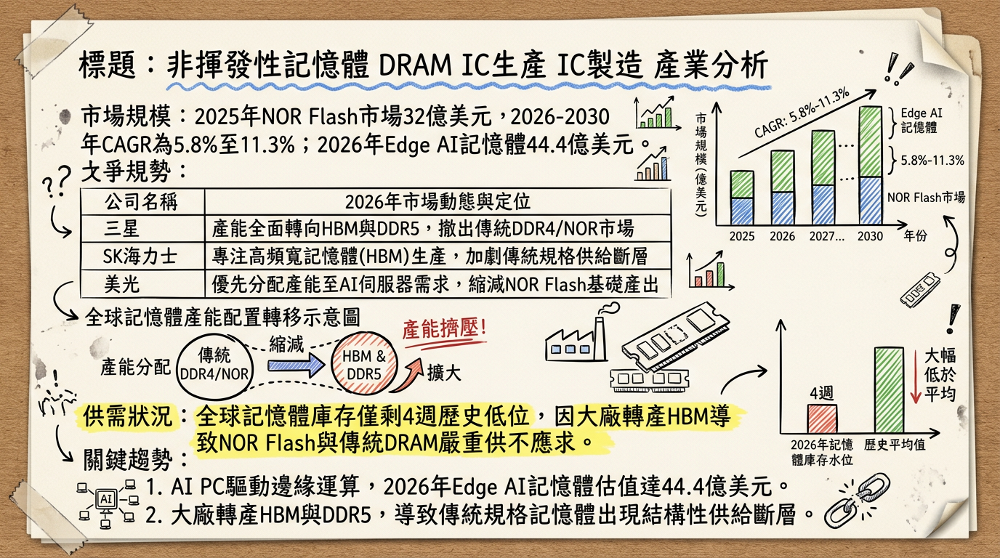
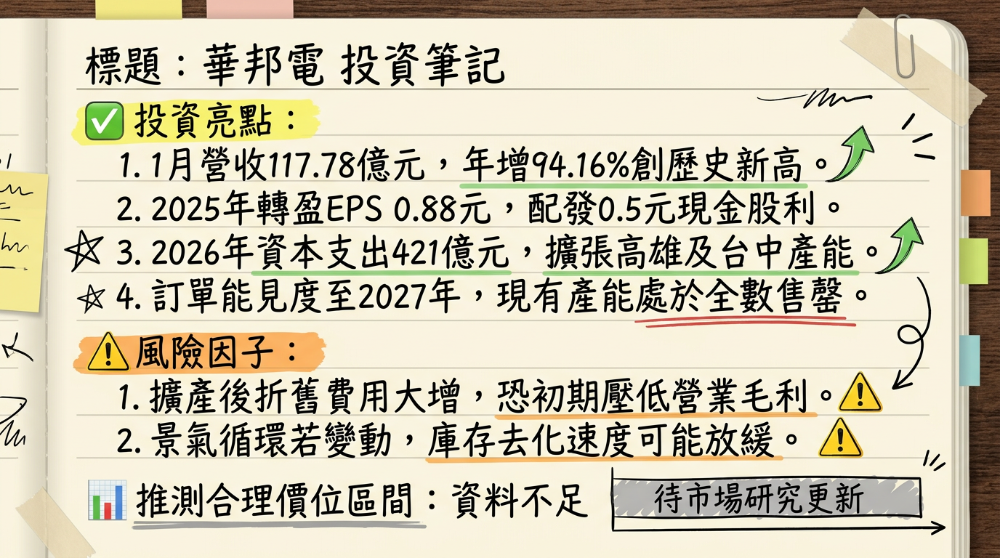

2344 華邦電 深度研究報告
一句話摘要
華邦電受惠於 AI 引發的記憶體超級循環，憑藉 16nm 製程轉進與 CUBE 邊緣運算技術，2026 年進入產能全數售罄的獲利爆發期。
公司概覽
華邦電為全球利基型記憶體（Specialty DRAM）與編碼型快閃記憶體（NOR Flash）領導廠商，並透過子公司新唐（4919）布局邏輯 IC 市場。
2025 全年營收結構
| 業務別 | 營收佔比 | 核心產品與技術重點 |
|---|---|---|
| 快閃記憶體 (Flash) | 35% | 全球 NOR Flash 市佔第一，主攻 512Mb 以上高容量產品。 |
| 邏輯 IC (Logic/新唐) | 34% | 專注 MCU、BMIC（電池管理 IC）及人機介面。 |
| 利基型記憶體 (DRAM) | 29% | 20nm/16nm DDR3、DDR4，受惠 HBM 產能排擠效應。 |
| 其他 | 2% | 包含代工與代銷業務。 |
核心競爭優勢
財務分析
近期月營收趨勢趨勢表（2025/08 - 2026/01）
| 月份 | 金額 (億元) | 月增率 (MoM) | 年增率 (YoY) | 備註 |
|---|---|---|---|---|
| 2026/01 | 117.78 | +20.55% | +94.16% | 創單月歷史新高 |
| 2025/12 | 97.70 | +13.21% | +53.32% | 強勁拉貨動能 |
| 2025/11 | 86.30 | +4.91% | +38.69% | 需求穩步走揚 |
| 2025/10 | 82.25 | +3.85% | +34.88% | 景氣確定復甦 |
| 2025/09 | 79.20 | +3.61% | +2.13% | 轉正拐點 |
| 2025/08 | 76.44 | +3.60% | - | - |
季度與年度數據
- 2025 Q4 財報： 營收 266.25 億元 (QoQ +22.3%)，毛利率 41.9%，EPS 0.76 元。
- 2025 全年： 營收 894.06 億元 (YoY +9.55%)，EPS 0.88 元。
- 2026 預估： 營收挑戰 1,345 億至 1,716 億元；法人預估 EPS 區間 7.52 元至 15.26 元。
法說會重點（2026/02/10）
- 產能現況： 總經理陳沛銘表示，2026 年至 2027 年產能「已全數被預約完畢 (Sold out)」。
- 價格展望： 2026 Q1 合約價漲幅預計維持 30% 以上；DDR4 結構性缺貨將持續全年。
- 出貨指引： 預估 2026 年位元出貨量將較 2025 年「翻倍成長」。
- 資本支出： 董事會核准 421 億元 預算（較 2025 年 55 億元大幅跳增 665%），鎖定 16nm 擴產。
券商觀點
| 券商名稱 | 日期 | 目標價 | 評等 | 備註 |
|---|---|---|---|---|
| 本土老牌投顧 | 2026/02/23 | 150 元 | 買進 | 由 103.5 元大幅調升 |
| FactSet 綜合調查 | 2026/02/22 | 145 元 | 積極買進 | 2026 EPS 中位數估 15.26 元 |
| CMoney 彙整分析 | 2026/01/29 | 158 元 | 買進 | 預估 2026 EPS 9.91 元 |
| 群益投顧 | 2026/01/07 | 120.3 元 | 買進 | 給予 16 倍本益比 |
財報深度分析
利潤率趨勢與資本支出
| 項目 | 2025 Q3 | 2025 Q4 | 2026 Q1 (E) | 趨勢分析 |
|---|---|---|---|---|
| 毛利率 | 46.7% | 41.9% | > 46% | 受惠合約價補漲 30%-90% |
| 營業利益率 | 12.8% | 15.4% | 18.0%+ | 稼動率滿載帶動規模經濟 |
| 資本支出 | 55 億 (2025) | - | 421 億 (2026) | 歷史新高，投入 16nm 設備 |
- 存貨分析： 全球記憶體庫存水位降至 4 週（歷史極低），華邦電目前無庫存壓力，處於零庫存生產狀態。
股權異動與資產操作
- 資產活化（2026/02/23）： 公告處分封測廠華東（8110）持股 1,000 萬股，預計獲得現金 6.22 億元，強化營運現金流。
- 法說後動向（2026/02/26）： 外資單日大舉買超 27,413 張，顯示大戶籌碼快速回流。
產業分析
全球 NOR Flash 競爭格局 (2025 數據)
| 排名 | 公司 | 市佔率 | 優勢與動態 |
|---|---|---|---|
| 1 | 華邦電 (Winbond) | 30% - 35% | 領先進入 16nm，具備 DRAM/Flash 混合技術。 |
| 2 | 兆易創新 | 18% - 23% | 中國國產替代，但製程仍停留在 40/55nm。 |
| 3 | 旺宏 (Macronix) | 16% | 2025 EPS -1.77 元，表現相對疲弱，主攻車用 ROM。 |
| 4 | 英飛凌 | 10% | 專注於高階工業與航空。 |
- HBM 排擠效應： 三星、SK 海力士產能轉向 HBM，使傳統 DDR4/DDR3 供給缺口達 4.9%，華邦電成為主要轉單受惠者。
近期催化劑
- 利多事件：
2. DDR4 合約價 2026 Q1 預計季增 90% 以上。
3. Edge AI 應用（AI PC/手機）對利基記憶體需求翻倍。
- 利空/風險：
2. 擴產過快：若 2027 年景氣反轉，龐大折舊費用將成為負擔。
⭐ 成長動能時間軸
- 2026 Q1： 高雄廠正式導入 16nm 製程，良率進入放量期。
- 2026/05 - 06： 高雄廠新一輪裝機擴產，月產能由 1.5 萬片提升至 2.5 萬片。
- 2026/07： 台中廠 Flash 新產能投片，月產能增加至 58K 片。
- 2026 H2： CUBE 記憶體技術取得首波大宗訂單，鎖定邊緣運算市場。
- 2027 年： 421 億資本支出轉化為完整產能，營收挑戰歷史年度新高。
2026 展望
- 成長動能： AI 驅動的記憶體超級循環 (Super Cycle) 導致量價齊揚，16nm 轉換帶動成本競爭力提升。
- 風險因子： 需觀察 16nm 良率提升速度，以及 2027 年後原廠 HBM 產能是否釋放回傳統市場。
投資結論
本報告由 AI 自動產生，資料來源為公開網路資訊，僅供參考，不構成投資建議。產生時間：2026-03-01 02:30
📊 資訊卡


